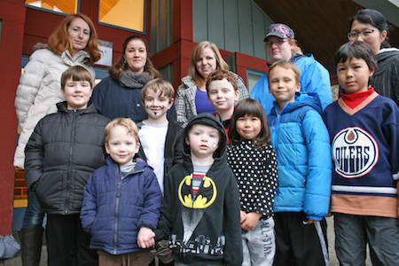

Evening/Weekend Care
Kids Klub Child Development Centers (Pasadena and San Gabriel/Rosemead) is open on evenings and weekends (see days and hours below). We are here to care for your children during the hours when most other child care facilities are closed. Our Evening/Weekend program provides a fun and exciting atmosphere for your children to learn and create new experiences through, crafts, games, activities, and bouncers. Our safe and secure facility will leave you with a peace of mind while you work, run errands, or enjoy a well deserved parent’s’ night out.
Download this month's Evening/Weekend schedule of events and activities. Just click on your desired age group in the orange box to the right.
Ages Served:
The Evening/Weekend program is available to children from 6 weeks old to 12 years of age.
Pasadena Hours:
Monday - Thursday 5:30 p.m. - 10:00 p.m.
Friday 5:30 p.m. - 12:00 Midnight
Saturday 8:00 a.m. - 12:00 Midnight
Sunday 10:00 a.m. - 10:00 p.m.
San Gabriel/Rosemead Hours:
Thursday Closed
Friday 5:30 p.m. - 10:30 p.m.
Saturday 8:00 a.m. - 10:30 p.m.
Sunday Closed
Teacher to Child Ratios:
The program has three different age group components.
The Infants and Toddlers range from 6 weeks old to 24 months. We strive to keep our ratios at 1 teacher for every 3 Infant /Toddlers, but will never exceed 1 teacher to 4 Infants/Toddlers.
The Preschool group includes children from 2 to 5 years of age. If the child is not in Kindergarten. We strive to keep our ratios at 1 teacher for every 9 Preschool Age Children, but will never exceed 1 teacher to 12 Preschoolers.
The School-Age range from 5-13 years of age (5 and in Kindergarten). We strive to keep our ratios at 1 teacher for every 12 School Age Children, but will never exceed 1 teacher to 14 School Age Children.
Membership and Reservations:
A Kids Klub membership is required for every child to attend the Evening and Weekend program. The completion of our registration packet and the payment of the onetime initiation fee are required to become a Kids Klub member. Once a member, you are a member for life.
Reservations are required for every child who is planning to attend the program. We ask that you please call to make a reservation at least 24 hours in advance. A reservation is only guaranteed if made 24 hours in advanced. If a reservation is made with less than 24 hours, then the confirmation of the reservation is based on the space available.
Meals:
A hot lunch and dinner are provided every day at an additional cost. Breakfast and snacks are included in the program’s hourly rates. (Breakfast is only offered on Saturdays).
Hourly Rates:
Infants (0-2yrs) $11.25/hr
Preschool (2-6 yrs) $9.50/hr
School-Age (6-12yrs) $8.25/hr
Discount: 20% on 2 or more children
Meal Rates:
Individual Meals - Infants $3.75 each
Individual Meals - Preschool $4.25 each
Individual Meals - School Age $5.00 each
For questions regarding Pasadena E/W care, please contact Kristine Manley our Evening/Weekend Director at (626) 795-2501
For questions regarding San Gabriel/Rosemead E/W care, please call (626) 288-4400